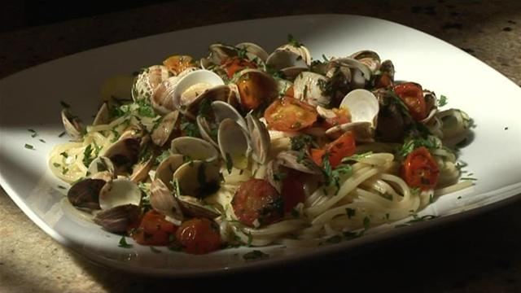

Step 4: By now your pasta should be just about perfect. Drain and add to the pan of clams along with the parsley leaves and an extra drizzle of extra virgin olive oil. Stir or toss for a further minute or two to let the beautiful seashore juices from the clams be absorbed into the pasta. Serve right away. No sane Italian would eat this dish without some fresh hunks of bread to mop up the juices. Enjoy!
